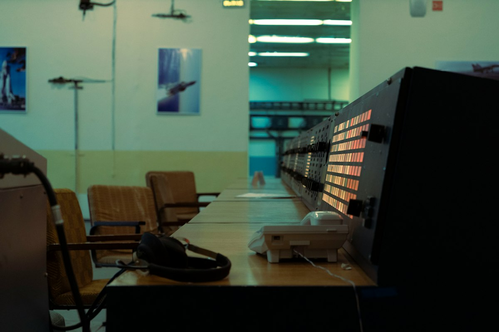

A Dark-Matter Telescope Anomaly Arrives Before Its Number
The notice supplies a send stamp and a research goal rather than a measurement. That gap is a normal stage of survey astronomy, and it is the informative part.

The announcement arrives as a file name
The release behind this report lives at a URL whose digits read as a clock, stamped on 24 November at 05:58:52. Somebody pressed send in the small hours. The aggregator catalogued the item the following day. That stamp is the sharpest fact the announcement supplies. The headline, by contrast, gives a class of telescope, a research target and one adjective. Everything else is left to the reader's patience.
Read that way, the item stops looking like a press office having a bad day and starts looking like a stage of work. An anomaly announcement is what a survey produces when its error model stops covering the measured sky. The release is the first public trace of a dispute inside a collaboration, and a pipeline will settle it. The surprise is the noise around it. The load-bearing content is what the announcement implies about the instrument.
Two machines answer to one phrase
Space telescopes built to hunt dark matter are two different trades with the same job description. One maps how mass bends light: wide, patient imaging whose output is a statistic about the distorted shapes of distant galaxies. The other counts particles arriving from outside the atmosphere and asks whether an excess came from annihilation or from decay.
Nothing in the material available here names which machine is involved, and the answer decides everything downstream. An imaging survey is limited by how well it knows its own optics and the blur smeared across every galaxy. A particle detector is limited by backgrounds it cannot switch off: cosmic rays from every direction, plus the secondaries they carve inside the instrument. Those are different arguments with different timelines, and a headline has no room for either.
Why a surprise is a scheduled product
A survey that lowers its systematic floor keeps finding things the models do not explain. The floor is what defines an explanation. Each calibration pass subtracts a known error and exposes what was sitting underneath, which is why new data versions arrive carrying awkward features. Most of what surfaces is the shape of the next correction. The team usually knows that before the press office does.
The announcement in question may be exactly that feature: a line item in a correction roadmap that a small group has argued about internally. Under that reading, the word unexpected describes a schedule rather than the sky. An instrument doing something nobody intended is also what happens whenever a new analysis chain replaces the old one. The press office calls it a discovery. The roadmap calls it Tuesday.
The best version of the excited headline
Give the strong reading its due. A collaboration that reports an anomaly early lets outside groups attack it with data the team does not have. That is faster than one group exhausting its own systematics alone. Anomalies are cheap to test and expensive to confirm, which is exactly the combination a competitive field should advertise. Silence protects a reputation; disclosure transfers the work.
The surprise is rarely the last word.
So the announcement can be entirely responsible and still tell a reader nothing usable. Those facts coexist comfortably in this genre. The office has done its part by signalling that a question is open. Everyone else waits for the number and the residual plot. A reader who wants to be useful today can only ask which instrument is involved, and what that instrument was built to subtract.
What a thin release still gives
Start with the distribution record, because it is the part the release cannot get wrong. A send stamp on 24 November and an index entry on 25 November describe routine handoff: dispatched overnight, picked up on a normal cycle. Exclusives are held for a slot and dressed with a named researcher. This item was not dressed.
The next extract is the mission class, and here the release gives only the objective. That is enough to predict the shape of the coming argument: whatever was seen will be contested through the instrument's error model. Then check what is linked. Nothing in the material available at filing pointed to a paper, and at this stage an unfinished analysis is the ordinary explanation.
What cannot be known from here
Be plain about the ledger. Homeworld Press worked from the release's headline, its catalogued date of 25 November and the digits in its URL. It did not have the instrument, the measurement, the collaboration or the journal. Nothing above is a verdict on whether the sky actually did something surprising, and that question is not answerable from a distribution record.
The limit costs the argument nothing, because the reasoning never touches the missing number. Anomaly announcements from any survey carry the same signals: the instrument class, the stage of the analysis, plus the record of how the news was sent out. Swap the telescope and the reading holds. That is what makes this genre worth learning to read rather than to cheer.
What turns a notice into a finding
The order is readable in advance. An internal analysis reaches a preprint server with residuals and control regions visible. Then someone who did not build the instrument reduces the same data, or a second instrument looks at the same region. Finally a model survives attack from a group with nothing to lose.
None of that is visible in a headline, and a notice that skips it has told the truth about the wrong thing. The office is reporting that a question exists inside a process which has not answered it. Sensible readers note the date and wait for the name. The settled folder will not need this entry.
The instrument is the story
Covering this beat means reading for the machinery. A survey team finds something its model does not want roughly as often as it releases a new data version. Progress in this field is mostly the speed at which such findings become calibrations. The unexpected is a by-product of a pipeline getting better. What deserves attention is the name of the machine and the error it was never supposed to show.
Read this way, the late-November item is already useful. It records that some pipeline produced a residual its authors could not absorb. It also records that an institution judged the surprise worth saying before it was worth quantifying. A paper will follow, or the entry will fade out of the archive. The timestamp will still sit in the digits of a link nobody decodes.